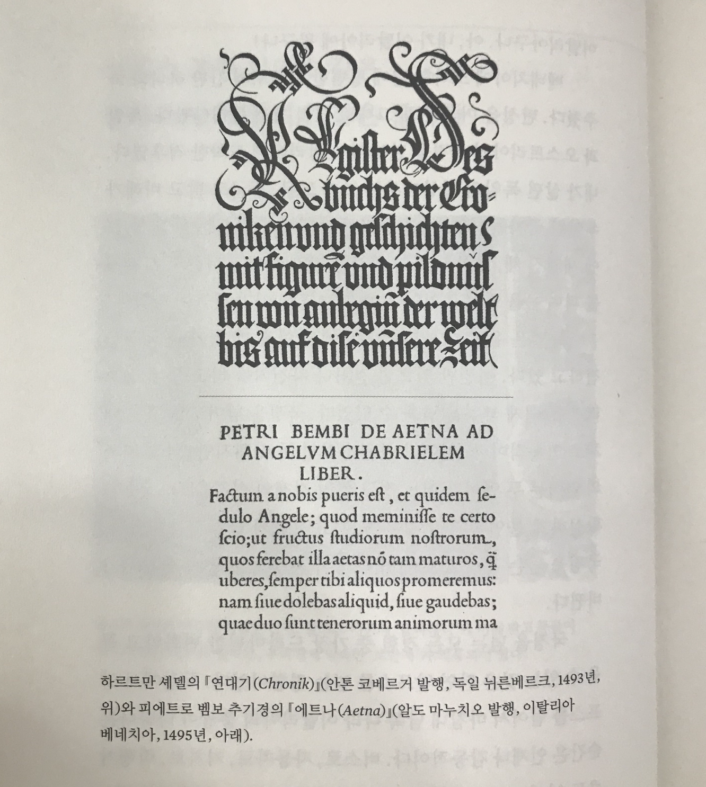
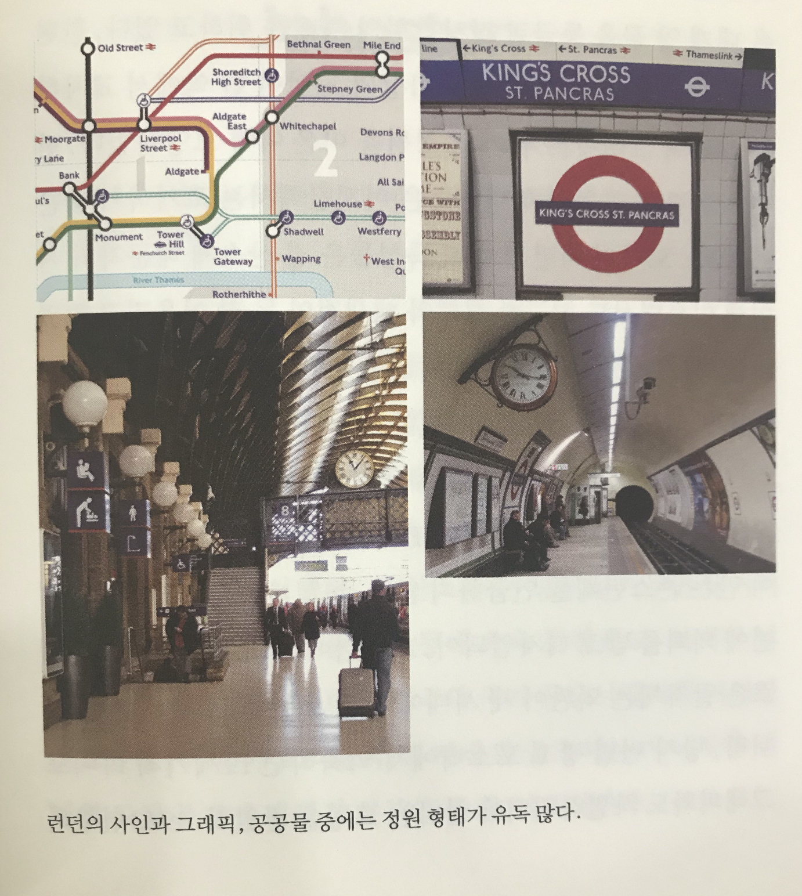

책꽂이에 책이 점점 많아지면서 최근 들어서는 전자책을 자주 사곤 하는데요, 어떤 책은 꼭 종이책으로 사두고 싶은 책들이 있는데 이번 책이 그런 책 중 하나입니다.
‘글자에 아로새긴 스물일곱 가지 세상’이라는 부제를 가진 이 책은 알프스, 뉴욕, 홍콩, 터키, 아랍 등의 세상 풍경을 글자라는 관점으로 바라봅니다. 어떤 배경에서 어떤 폰트가 나왔는지 나라별 도시별 배경과 역사부터 수학과 물리, 음악까지 글자와 연결해 알려줍니다.
📌Insight
오늘날 우리가 쓰는 영어를 포함하여 독일어, 프랑스어 등 대부분은 '로마자'를 사용합니다. 같은 로마자라도 영국식, 프랑스식, 독일식 등 지역색이 있는데, 저자는 글자가 지역의 생태성을 가진다고 말합니다.
예를 들어, 전체적으로 빈 공간이 적어 글자 전체가 검게 보이고 절도 있는 꺾임이 돋보이는 독일의 '블랙 레터'와 빈 공간이 많아 밝고 비례를 많이 둔 이탈리아적 글자체인 '화이트 레터'를 보면 차이가 명확하게 드러납니다.

저자는 런던의 도시 전체가 길 산스 같다고 표현합니다. 단지 길 산스체를 많이 사용했다는 이유가 전부는 아닙니다. 런던의 도시 풍경 속 신호등, 표지판 같은 곳에서 다른 유럽 도시에 비해 유독 정원, 정마름모, 정사각형 같은 도형 모양을 많이 볼 수 있었다고 합니다. 그런 모양들이 도시 곳곳에서 보이니 길 산스체가 없는 풍경 속에서도 '길 산스'스러움을 느낄 수 있었다고 하죠.
이는 형태와 모양 뿐만 아니라 글자를 대하고 사용하는 태도에서도 나타납니다. 길 산스에 영감을 준 서체가 존스턴체인데 2016년에 100주년을 맞아 '존스턴100'으로 리디자인되어 나왔습니다. 100년이라는 세월 동안 글자를 수선해가며 사용해가는 모습 안에서도 영국을 느낄 수 있습니다.

뉴욕에는 유명한 헬베티카가 있습니다. 가장 중립적인 서체라고도 불리는 헬베티카는 뉴욕 뿐만 아니라 암스테르담, 도쿄 등 많은 도시 공공 디자인에서 쉽게 볼 수 있고 BMW, 맥도날드, Jeep 등 세계적으로 유명한 브랜드 로고에서도 쉽게 볼 수 있습니다. 특정 시대나 지역을 드러내지 않는 탈지역적인 특성은 다양한 나라에서 온 사람들이 모여있는 미국의 특성을 잘 대변합니다.
로마자와 한자를 함께 쓰는 홍콩에서는 어떨까요. 홍콩은 1970년대부터 국제적인 그래픽 디자인이 본격적으로 도입되어 두 가지 문자가 공존하며 발전되고 있습니다. 글자를 구성하는 논리도, 모양도 너무나 다른 한자와 로마자의 조합이 왜 멋있어보일까 하는 질문에서 찾은 답은 '홍콩인의 실용주의'입니다.
한자가 익숙한 사람은 한자를 읽고, 로마자가 익숙한 사람은 로마자를 읽을 테니 어울리지 않아도 익숙한 대로 써버렸다고 합니다. 물론 글자 배치 방법과 기술적인 환경 등 몇 가지의 요인이 더 있지만, 로마자와 한자 각자의 영역을 지키며 공존하는 글자를 보며 홍콩의 자유로움을 느낄 수 있습니다.